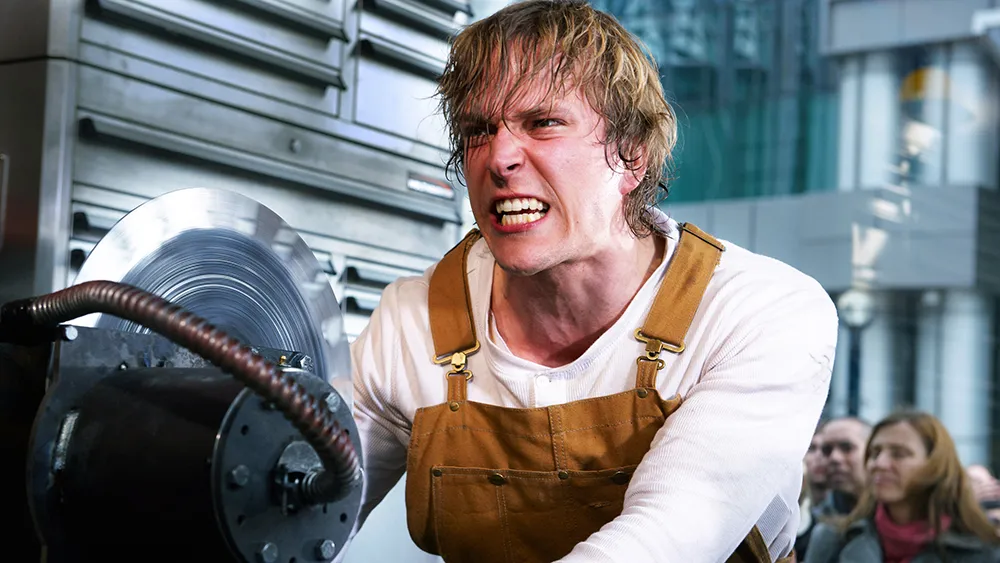

<body style="background-color: black;"></body>
<h1 style="color: white;"> this is a tierlist of my top 20 saw traps </h1>
<h1 style="color: white;"> 1: reverse bear trap</h1>
<p style="color: white;"> the reverse bear trap is the best trap in the saw movies, it looks amazing and has the
    coolest death function, their jaw gets ripped open, its by far the most iconic out of 
    them all and is just overall a amazing trap, also we see amanda for the first time 
    so that is a plus. 
    </p>
    </img>
<h1 style="color: white;">2: the rack</h1>
<p style="color: white;">the rack is one of the coolest traps from saw 3 and made the movie 
    far better in my opinion, its such a grusome trap and you dont even get
    a chance to survive unless the other person saves you, its insanely good.
</p>
</img>
<h1 style="color: white;">3: the eyeball trap</h1>
<p style="color: white;">the eyeball trap from saw 10 is one of the coolest traps and its a serious
    shame that it was only in johns imagination, im suprised their werent 
    more eyeball traps in the past, as they are really good and grusome.
</p>
</img>
<h1 style="color: white;">4: the acid axe trap</h1>
<p style="color: white;">the one i am talking about is the final trap in saw 6 (im not talking
    about hoffman's reverse beartrap btw) the acid axe is extremely grusome, your
    fate lies in the person you betrayed and the axes swings down as inserts 
    skin eating acid inside of your body, slowly killing you, this is easily one of 
    my favs.
</p>
</img>
<h1 style="color: white;">5: the public execution</h1>
<p style="color: white;"> this trap is insane is every way, your last moments being viewed by
    a couple hundred people, it has to be the worst death, but one thing i hate about not just the trap
    but the entire movie is how red they made the blood, it looks awful.
</p>
</img>
<h1 style="color: white;">6: the pain train</h1>
<p style="color: white;"> now i know i know, how the hell did i put a one, (which is in jills dreams) 
    at 6! well i have the answer for you, i just love grusome kills, its amazing and seeing 
    jill get ripped in half in a bloody mess was just one of those scenes where you gasp, it 
    was just so good! </p>
</img>   
<h1 style="color: white;">7: the merry go round</h1> 
<p style="color: white;">god i love this one! 6 people (maybe more i dont remember) locked
    on a merry go round, begging for there lives as their boss decides who lives, its crazy
    you see people betray eachother and tell lies, and it really shows how people will betray 
    eachother when faced with death  </p>
</img> 
<h1 style="color: white;">8: the oxygen crusher</h1>  
<p style="color: white;">i loved this, truely, holding your breath to not die, i mean its extremely
    heard to beat but its super cool, its a great concept for a trap and it must of taken a hell
    of a lot of thinking to make it work. (also justice for that old dude, didnt deserve that) </p>
</img> 
<h1 style="color: white;">9: the iconic bathroom trap</h1>  
<p style="color: white;">the reason i put this so low is because it wasnt that interesting, but was still deserving
    of a high spot, we also meet adam so that is amazing (best character ever!) </p>
</img> 
<h1 style="color: white;">10: the glass coffin</h1> 
<p style="color: white;">HOFFMAN WAS A GENIUS FOR THIS! this trap was one of the coolest plot twists ever! this was 
    my fav scene from saw v </p> 
</img> 
<h1 style="color: white;">11: the angel trap</h1>
<p style="color: white;"> this trap was awesome, all i have to say</p> 
</img>
<h1 style="color: white;">12: hoffmans reverse beartrap</h1> 
<p style="color: white;"> the reason this is up this high is mainly because of the escape, hoffman is legit a mega mind
    using the window as a way to stop it from activating, soo goooood!
</p> 
</img>


